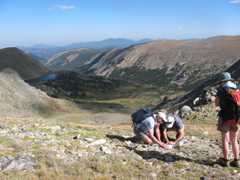

|
| Home About Us Our Services Experience Contact Us |
|
DSM News Archives
COVER Home Repair offers education to homeowners We are proud to support COVER Home Repair and Reuse Program and The Recover Store, based in White River Junction, Vermont. COVER Home Repair actively promotes the reuse of building materials in all of their projects. The Recover Store provides an opportunity for people to donate or purchase a wide range of used (and sometimes new) items at very low cost. This philosophy of reuse, thus diverting useful material from the solid waste stream, fits well with the focus of our work at DSM Environmental Services. The fact that COVER completes over 40 low income home repairs per year is one more reason for us to believe in the important work they do. COVER offers classes taught by professionals on a variety of topics, open to the public. Homeowners can learn do-it-yourself skills for how to keep a home safe, warm, dry, and functional. Check out COVER's website for more information. Green Up Vermont! This picture shows Vermont Governor Davis and a troop of Boy Scouts on closed Interstate 89 in Vermont on the first Green-Up Day in May 1970. For the past ten years, DSM's Ted Siegler has volunteered his time to be the Green-Up Day coordinator for his hometown of West Windsor, Vermont. Ted works with the local elementary school to organize the students to pick up litter on the 46 miles of Town roads the first Saturday in May. DSM's Ham Gillett is the coordinator for Windsor, where he lives and where DSM's office is located. Each year litter collection costs Vermonters hundreds of thousands of dollars, is a blight on the landscape of Vermont, and is also very harmful to birds and animals. Continued education of children and adults alike is a key component of Vermont's Green-Up Day. Visit the Green Up Vermont Website
DSM presents Recycling 101 DSM presented their popular Recycling 101 presentation at the Keep America Beautiful 2009 National Conference. Download a copy of the presentation (4 MB). Designing Public Recycling on the National Mall DSM was selected by the Trust for the National Mall to design a sustainable recycling program for this highly visible public space visited by over 20 million people each year. View pictures from our trip to Washington, DC.

|
| PO Box 2 • Windsor, VT 05089 • TEL (802) 674-2840 • FAX (802) 674-6915 • dsm@dsmenvironmental.com |